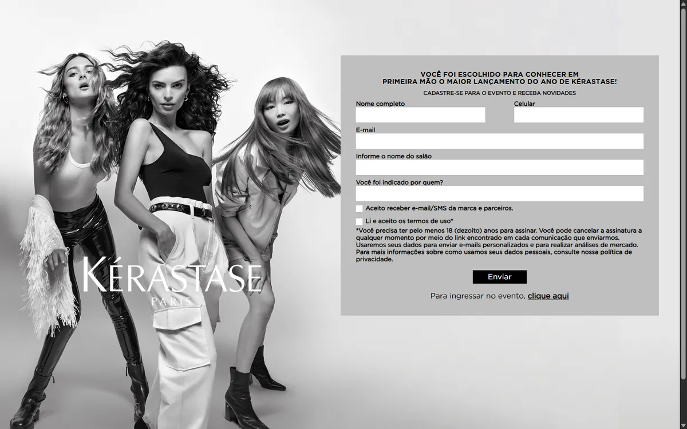
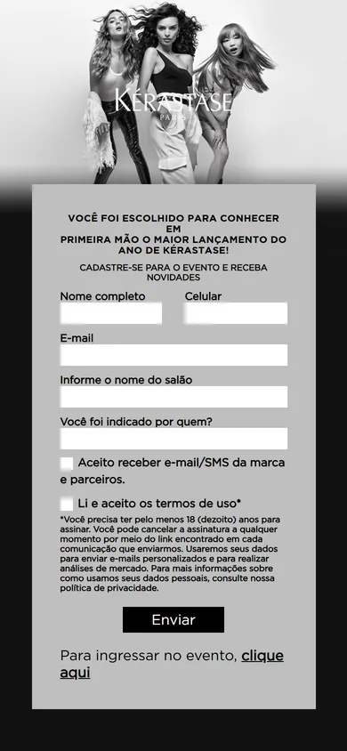

Todos os projetos
Landing pages · Campanha
Kérastase Paris
Landing pages de lançamento para as linhas Blond Action e Curl Manifesto, com formulários de cadastro de profissionais integrados ao CRM da marca.


Contexto
Os lançamentos convidam profissionais de salão para eventos exclusivos. A página precisa ser fiel à identidade da marca e converter: o profissional chega, entende o convite e se cadastra.
Objetivos
- Fidelidade total à identidade visual da campanha
- Formulário curto, claro e com consentimento explícito
- Funcionamento consistente no celular
O que eu fiz
- Construí o layout responsivo com imagens de campanha específicas para desktop e mobile.
- Desenvolvi o formulário com campos do perfil profissional (nome artístico, Instagram, salão, cidade e estado) e os consentimentos de comunicação e termos.
- Implementei o envio assíncrono via fetch para a plataforma de CRM, com feedback no botão (“Enviando…” e “Enviado”).
- Montei o build com Gulp: Pug para HTML, SCSS com Autoprefixer e JavaScript ES6 com Babel e ESLint.
Resultados
- 84 Desempenho
- 96 Boas práticas
- 0,005 CLS · estabilidade visual
Medição do site em produção · Lighthouse mobile · out/2026. O site segue em produção sob gestão do cliente, então os números refletem o estado atual dele.
Aprendizados
Revendo o código hoje, eu montaria os parâmetros com URLSearchParams, que já codifica os valores, e trataria falhas de rede para o usuário nunca ficar preso em “Enviando…”.
const params = new URLSearchParams({
'fields[Email]': form.email.value,
'fields[NomeCompleto]': form.name.value,
'fields[Salao]': form.salon.value,
unique: 'Email',
});
try {
const res = await fetch(`${API_URL}?${params}`);
if (!res.ok) throw new Error(res.status);
button.value = 'Enviado';
form.reset();
} catch {
button.value = 'Tentar novamente';
}